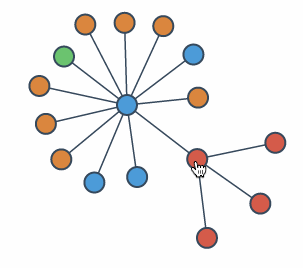

<div id="full-height-wrapper">
  <div id="full-height-wrapper-comp">
    <table class="TeaTable">
      <tr class="indigo-bg">
        <td class="indigo-bg">
          <br/>
          <textarea maxlength="400" placeholder="Insert your text to analyze here or chose an example from the dropdown above..." [mat-autosize]="false" (change)="changeInputArea($event.target.value)" [ngModel]="text"></textarea>
          <div>
            <button mat-flat-button color="accent" class="top-50" (click)="preprocess()">Extract features</button>
          </div>
        </td>
      </tr>
      <tr class="indigo-bg" *ngIf="tokens !== undefined && tokens.length > 0">
        <td class="indigo-bg va-top">
          <!--<mark class="noun">Noun</mark><mark class="adj">&nbsp;Adjective&nbsp;</mark><mark class="verb">&nbsp;Verb&nbsp;</mark><mark class="adv">&nbsp;Adverb&nbsp;</mark><mark class="token">Other</mark>-->
          <br/>
          <div class="output">
            <span *ngFor="let token of tokens">
              <mark *ngIf="trainable(token)" [class]="calculateTokenClass(token)" [ngStyle]="{'background-color': calculateTokenStyle(token)}" (click)="openModal(content, token.linguistic_features.offset.start_merged)">{{token.linguistic_features.orth}}</mark>
              <mark *ngIf="!trainable(token)" [class]="calculateTokenClass(token)" [ngStyle]="{'background-color': calculateTokenStyle(token)}" >{{token.linguistic_features.orth}}</mark>
              <br *ngIf="token.linguistic_features.orth == '\n'">
            </span>
            <span class="placeholder" *ngIf="tokens === undefined">See your analyzed text here...</span>
          </div>
        </td>
      </tr>
    </table>
  </div>
</div>

<!-- Modal -->
<ng-template #content let-modal>
  <!--<div class="modal-header">
    <h4 class="modal-title" id="modal-basic-title">Train a token</h4>
    <button type="button" class="close" aria-label="Close" (click)="closeModal()">
      <span aria-hidden="true">&times;</span>
    </button>
  </div>-->
  <div class="modal-body">
    <mat-tab-group mat-align-tabs="center">
      <mat-tab label="NER">
        <form>
          <div class="form-group">
            <div class="input-group">
              <table class="w-90">
                <tr class="centered">
                  <br/>
                  <div class="centered w-50 d-initial font-weight-bolder">Matching entities (uncheck if incorrect):</div>
                  <br/>
                <span *ngFor="let item of selectedToken.linguistic_features.tessaurus.hypernyms">
                  <mat-checkbox class="ml-2 mr-2" checked="checked">{{item}}</mat-checkbox>
                </span>
                  <mat-icon class="{{iconNewNerClass}}" aria-hidden="false" aria-label="Add NER entity" (click)="showNewNER()">add_circle_outline</mat-icon>
                  <mat-form-field class="{{newNerClass}}">
                    <mat-label>NER</mat-label>
                    <input [autocomplete]="'off'" matInput placeholder="Ex. Organization" (input)="validateNER($event.target.value);" (keyup.enter)="saveNER($event.target.value);">
                    <mat-hint *ngIf="!validNer" class="red">{{invalidNerMessage}}</mat-hint>
                  </mat-form-field>
                <hr/>
                </tr>
                <tr>
                  <app-graph [token]="selectedToken"></app-graph>
                </tr>
              </table>
            </div>
          </div>
        </form>

      </mat-tab>
      <mat-tab label="Other features">
        <app-features [token]="selectedToken"></app-features>
        </mat-tab>
    </mat-tab-group>
  </div>
  <div class="modal-footer">
    <button type="button" class="btn btn-primary" (click)="confirm()">Accept</button>
    <button type="button" class="btn btn-danger" (click)="closeModal()">Cancel</button>
  </div>
</ng-template>


<!-- Modal -->
<ng-template #confirmation let-modal>
  <div class="modal-header">
    <h2 class="modal-title" id="modal-basic-title">Confirmation</h2>
    <button type="button" class="close" aria-label="Close" (click)="closeModal()">
      <span aria-hidden="true">&times;</span>
    </button>
  </div>
  <div class="modal-body">
    <div class="form-group">
      <div class="input-group">
        <table class="w-90">
          <tr class="centered">
            <br/>
            <div class="centered w-50 d-initial font-weight-bolder">You are going to add and rank {{selectedToken.linguistic_features.orth}}
            into the Knowledge Graph. Are you sure?</div>
            <br/>
            <br/>
            
          </tr>
        </table>
      </div>
    </div>
    </div>

  <div class="modal-footer">
    <button type="button" class="btn btn-primary" (click)="save()">Save</button>
    <button type="button" class="btn btn-danger" (click)="closeConfirmation()">Back</button>
  </div>

</ng-template>
